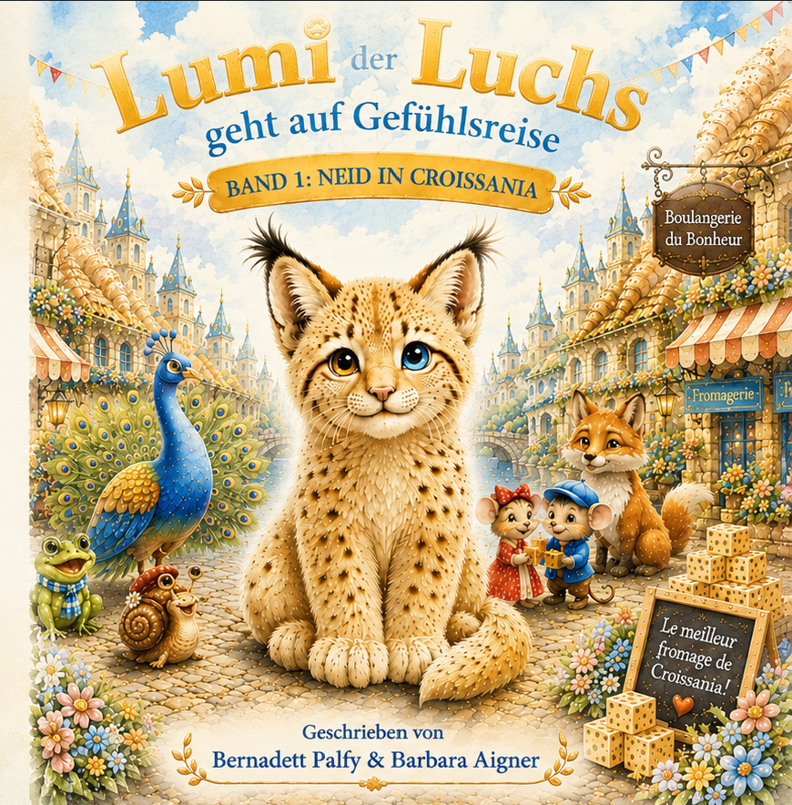

Band 1
Neid in Croissania
Was passiert, wenn man andere anschaut und plötzlich das Gefühl bekommt, selbst anders zu sein?
Eine Gefühlsreise für Kinder über Unterschiede, Vergleichen, Freundschaft und die Frage, was jeden Einzelnen besonders macht.
📖 Kleine Leseprobe öffnen
Eines Abends saß Lumi neben seiner Mutter. Die Sonne ging langsam unter und färbte den Himmel orange und gold.
Lumi schaute auf seine Pfoten.
Dann sagte er leise: „Mama … ich glaube, ich bin anders.“
Seine Mutter sah ihn an mit einem ruhigen, warmen Blick.
„Ja“, sagte sie sanft. „Das bist du.“
Lumi schaute überrascht auf.
„Ist das … schlecht?“
„Schnell und langsam, groß und klein,
alle dürfen anders sein …“